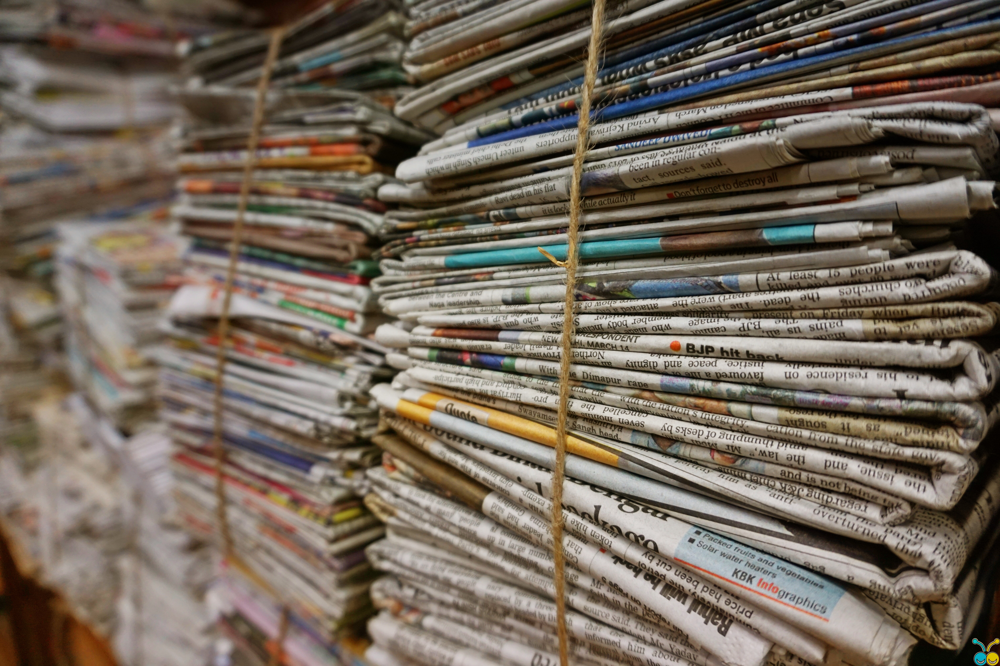
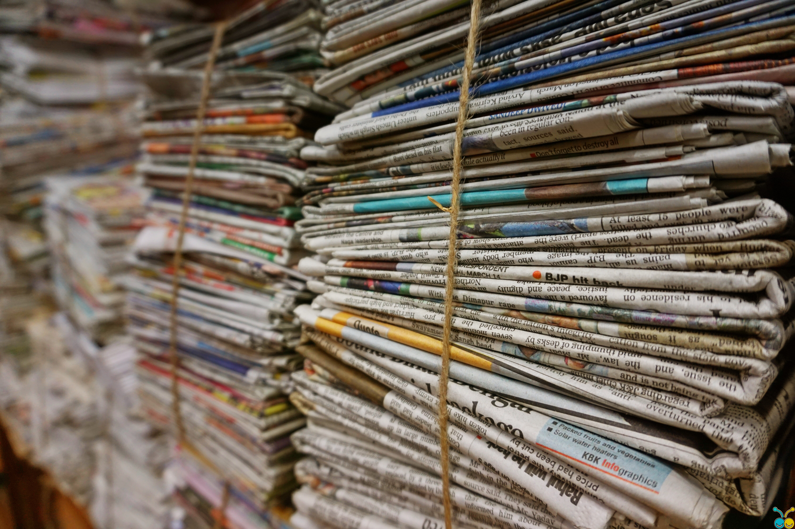

1. Diminish all of our debris and aim for zero waste in our community
2. Lessen the amount of garbage to be burned
3. Be able to conserve, by doing this we will be able to lessen our wastes
4. Promote proper waste disposal within the community
5. Practice a sustainable living
We often watch movies related to doomsday, the end of the world, and say that it is just fiction.
However, with too much wastes when we use materials and resources that causes pollution that heavily
contributes to global warming, one thing is for sure, our world is now drifting towards a climate
catastrophe and this serves as our last warning. The waste we produce is the evidence that there is
something wrong (Connett, 2013) and the pollutions are merely resources we failed to use properly.
Once Earth is destroyed, we are doomed to lose it all. Our ignorance and lack of action when it
comes to waste management have allowed this crisis to grow immeasurably harder to solve and this will
cost our lives. We must stop dawdling, instead forge ahead if we really want to protect our future on this
planet. This is a precious place, but now, we are losing it. We must act now or else we will regret it later, start diminishing our debris and find ways on how we can minimize the waste we produce when use materials and resources like practicing the 3Rs, reuse, reduce, and recycle.
It’s not yet too late, there is still hope for we haven’t lost this fight with our wastes yet. Let’s not throw away the future of our planet and we must aim on having a sustainable life here on earth free from wastes, and we can only do this if all of us will show our concern to the nature and act accordingly.
We also accept donations to support the CARE campaign. Reach us at CARE@gmail.com or (043) 413 1325. Your utmost on this campaign is highly appreciated. Thank you very much.
 
